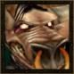

Joué par :
Kalanchoé Joué par :
[ Information masquée ] Age : 28
Lieu de naisance : Poste de Libre-Vent
Signe de naissance : Ours
Sexe : Homme
Race : Tauren
Faction : Horde
Formation : Druide
Niveau : 30
Guilde : Horde des Brasseurs (la) Artisanat 1 : Artisant du cuir
Artisanat 2 : Dépeceur
Informations hrp : présent généralement les mercredi et dimanche
Description : Une douce odeur de malt et de houblon émane de ce tauren au regard paisible et mélancolique. Mais sous ces airs sombres, Kalanchoé est un bon vivant amateur de bière, de coktails de bière, de chansons et de beuveries interminables.
Bien qu'il ne soit pas quelqu'un de violent par nature et n'ayant rien de personnel contre "les gens d'en face", il se laisse parfois entrainer par sa nature rocambolesque (et par l'abus de substances éthyliques) dans d'homériques combat!
Cinquième Ère [1]
Lune de la Force
Décade du Panda
Décade du Gorille
Décade de l'Ours
Lune d'Agilité
Décade du Tigre
Décade du Singe
Décade du Faucon
Lune de l'Esprit [1]
Décade de la Chouette
Décade de la Baleine
Décade du Lapin [1]
La vie est une longue bière tranquille
Kalanchoé entra dans l'auberge et s'assit lourdement à sa table préférée, celle qui se trouvait près de la porte. Il trouvait son emplacement plus commode en cas d'urgence. Ses expériences en matière de cocktails de bières provoquant parfois de douloureux effets secondaires. Il héla son ami, tenancier de l'auberge et maitre brasseur.
-Oh Kaalzkarn! Apporte-moi un peu de Sombrelune s'il te plait. Je vais avoir besoin de carburant aujourd'hui.
-Ah! oui? répondit l'intéressé, le sourire en coin. En quoi aujourd'hui est-il un jour différent? Tu as eu une révélation pendant la nuit? Un nouveau cocktail? Une nouvelle mixture?
-Que nenni mon ami ! Aujourd'hui est un jour spécial à marquer d'une bière blanche. Aujourd'hui Kalanchoé va livrer aux curieux que vous êtes l'histoire de sa vie.
-Enfin ! Tu vas enfin te confier à nous. Il est vrai que ton passé est des plus nébuleux. Je pense que moi aussi je vais avoir besoin d'un petit quelque chose en ce cas. Je suppose que le récit va être long
-Bof! Pas vraiment mais c'est une bonne occasion pour s'en jeter une, non ?
Kaalzkarn s'esclaffa. Il prit deux chopes, les remplit de Réserve Spéciale de Sombrelune, s'approcha de la table et les posa devant les deux places disponibles.
-Voilà mon ami, dit-il, je t'écoute.
Kalanchoé prit le temps de s'humecter la gorge d'une copieuse rasade.
-Bon ben voilà. Je suis né au Poste de Libre-vent, il y a 28 ans de cela. Mon père et ma mère étaient, respectivement, chasseur et guerrier Autant dire qu'avec une mère pareille, j'avais intérêt à me tenir à carreau. Père étant souvent en voyage, je reçus principalement mon éducation de ma charmante petite maman, à coup de trique et de bâton. Non que je fus un taurenillon difficile mais je n'avais pas un caractère assez belliqueux à son goût. Afin de m'endurcir, elle me confia de nombreuses tâches ingrates, comme de nettoyer les bouses de kodos ou bien porter l'intégralité de son équipement chez le forgeron. Parfois, afin de parfaire ma condition physique, elle me plongeait la tête dans un tonneau emplit d'eau pendant plusieurs minutes d'affilée sans que je puisse reprendre mon souffle. Ce doit être de là que vient mon aversion pour ce répugnant liquide.
Entre deux séances de nettoyages de bouses, je passais mon temps à traîner non loin de la mesa, observant les quelques plantes et animaux qui peuplaient les Milles Pointes. J'y trouvais beaucoup de réconfort. En effet, mes aspirations me poussaient plus vers la nature que vers les armes. Je devais tenir cela de mon père que sur dix ans j'avais croisé en tout et pour tout quatre fois. C'est à l'age de quatorze ans que je vis papa pour la dernière fois. Il mourut quelques temps plus tard, massacré par une bande de Murlocs en maraude. Je dois dire que je n'en garde pas un souvenir impérissable de celui la. S'il avait été plus présent peut être ma mère aurait-elle passé ses nerfs sur quelqu'un d'autre que moi
Enfin, bref. A cette époque j'étais devenu assez castard pour que ma mère n'ose plus m'imposer ses repoussantes tâches " ménagères" . Fini les séances d'apnée mais bonjour les brimades et insultes en tous genresJ'entends encore l'ignoble mégère : « Alors mollasson, fainéant, taurene va ! Si tu avais été un vrai Tauren pur et dur ton père ne serait pas parti sur les routes ! C'est de honte qu'il est mort ! Pas de la faute des murlocs. Et quand bien même, si tu n'avais pas été une clête, tu aurais pu lui prêter main forteMais non, tu préférais regarder les plantes et bailler aux corneilles ! » Généralement cela était suivit par une crise de sanglots et de mugissements pitoyables. En plus de manquer de bois dans le fagot, la folle était de mauvaise fois.
Si bien qu'un beau matin, fatigué de subir ce traitement digne de geôles de Durnhold, je pris mes cliques et mes claques et je quittai le tipi familiale, direction l'inconnu. Enfin, inconnu Dans mon esprit de jeune adolescent révolté, je comptais m'enfuir vers la somptueuse Thunder bluff, persuadé que là-bas je pourrais prouver à la face du monde ma valeurMais mes maigres économies ne me le permirent pas. J'échouais donc lamentablement au village de Bloodhoof. Sans le sous, sans avoir jamais appris la chasse, je dus me résoudre à mendier ma maigre pitance. Par chance, depuis mon enfance, j'avais ce donCelui qui me permettait de faire pousser les plantes. Ma mère m'avait toujours empêché de le pratiquer car elle jugeait que cela n'était pas assez viril. Ce fut pourtant grâce à lui que je pus me nourrir. La nuit, je fouillais dans les poubelles de l'auberge afin d'y récupérer des reliefs de repas. Parfois, une graine restait accrochée à un trognon de pomme. Je m'esquivais alors du village avec mon précieux butin, le plantait dans un endroit à l'abri des regards et exerçais mon « don ». La graine germait, produisait une petite pousse qui grandissait, grandissaitet je ne sais trop comment, j'arrivais à obtenir un pommier en miniature. Certes les fruits qu'il produisait étaient proportionnels à la taille de la plante mais comme ils possédaient à leur tour des graines, je n'avais qu'a répéter l'opération. Je pus ainsi subsister vaille que vaille.
Cette situation dura trois bon mois, lorsqu'un beau matin, alors que je traînais lamentablement devant l'auberge, j'entendis une voix, la voix de celui qui allait devenir mon sauveur et mon maître à penser : Kauth l'aubergiste.
-Hé bien jeune tauren. On n'a pas l'air de passer les meilleurs moments de son existence pour le moment. Je me nomme Kauth. Entre donc, j'ai peut être un marché qui pourrait nous satisfaire tous les deux.
Tu penses bien que j'ai sauté sur l'occasion !
-Assied toi la mon gaillard. dit Kauth. Voilà mon offre. Je ne me fais plus tout jeune et le travail d'aubergiste est assez physique. J'aurais besoin d'un garçon de salle, quelqu'un qui puisse m'aider à tenir cette auberge. Je t'offre le gîte et le couvert. En échange, tu travail pour moi. Qu'en dis-tu ?
-Ben, heumarché conclu Maître Kauth. Je suis votre tauren.
Malheureusement je ne pense pas pouvoir vous être utile dans l'immédiat, y a comme qui dirait que j'ai suivi un régime drastique ces temps-ci.
-Bah ! Quelques bons rôtis et des litres de bière devraient te remettre d'aplomb en peu de temps !
Sur ce il partit dans sa cuisine. Il revint peu de temps après, les bras chargés de victuailles et de chopes de bières moussues.
-Voilà mon gaillard ! Si ça te retape pas je peux rien pour toi. Il ajouta, mystérieux : Quand tu auras terminé, on va causer d'autre chose, de quelque chose qui à rapport aux pommes !
Sur le moment je n'y prêtais pas attention, trop absorbé par la contemplation de la chope posée devant moi. Je savais ce qu'était la bière, bien entendu, mais je n'y avais jamais encore goûté. Alors en avoir une pour moi tout seul !
-Vas-y gaillard, goûte la donc, elle va pas te mordre !
La main tremblante, je saisis l'anse de la chope et vidais précautionneusement le liquide ambré dans ma bouche.
Ce fut la REVELATION ! C'était divin, un nectar sans nul autre pareil. De gorgée en gorgée je m'engaillardissais. Quand j'eus terminé ma chope, Kauth leva un sourcil interrogateur :
-Alors ?
-Délicieux Maître Kauth, z'en auriez pas une autre ?
-Doucement mon jeune ami. La bière n'est pas seulement bonne, elle ouvre également l'esprit !
-Z'esprits ? keskq'elle ouvre ? Quoi ? Z'en veux une autre !
C'était ma première bière et tu devines que ce qui devait arriver arriva : je m'écroulai sur le sol comme les bouses que j'avais ramassées dans ma jeunesse.
Mon dernier souvenir de cette soirée est celui de maître Kauth riant à gorge déployée.
-mouhahahahaha mon gaillard, je crois bien qu'on va faire quelque chose de toi !
Kalanchoé rota, reposa sa bière sur la table, se leva et ouvrit la porte de l'auberge.
-Alors ? demanda Kaalzkarn. Tu va pas me laisser en plan quand même ? Et la suite ?
-Minutes, l'ami. Je vais te conter la suite de l'histoire mais d'abord j'vais arroser les buissons. Pendant ce temps là, sert moi donc une autre bière. Et amène-moi du bourbon avec cette fois ci !